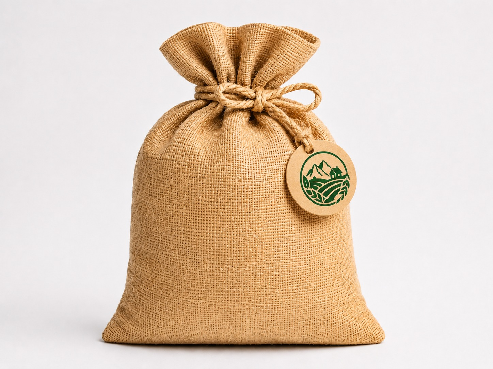
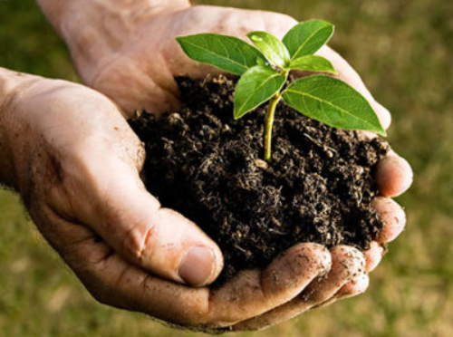

Profil UMKM Pupuk
Berkualitas
Produk dipilih dengan standar baik
Setiap Hari
Siap melayani kebutuhan usaha tani
Terjangkau
Cocok untuk skala kecil hingga menengah

Solusi pupuk pertanian yang dikemas dengan tampilan modern untuk media promosi usaha.
Pupuk Tani Subur hadir sebagai UMKM yang menyediakan berbagai kebutuhan pupuk untuk membantu petani, pekebun, dan pelaku usaha tanaman memperoleh hasil panen yang lebih baik. Website ini dirancang sebagai media promosi sederhana, informatif, dan meyakinkan bagi calon pelanggan.
Tagline UMKM

“Menyuburkan Tanaman, Menguatkan Hasil Panen, dan Mendukung Petani Lokal.”
Cocok untuk promosi UMKM karena menonjolkan nilai manfaat produk, kepercayaan, dan pelayanan yang dekat dengan kebutuhan pelanggan.
Latar Belakang

Cerita usaha yang tumbuh dari kebutuhan petani dan semangat membantu lahan lebih produktif.
Berangkat dari kebutuhan pertanian masyarakat sekitar, Pupuk Tani Subur dibangun sebagai UMKM yang mengutamakan kualitas produk, harga yang wajar, dan pelayanan yang ramah. Nilai-nilai ini kami tampilkan agar profil usaha terasa dekat, seperti website profil desa untuk kegiatan KKN, namun dengan wajah yang lebih estetik dan relevan untuk promosi usaha pupuk.
Visi
Menjadi UMKM pupuk terpercaya yang mendukung pertanian lokal lebih maju dan produktif.
Misi
Menyediakan pupuk berkualitas, memberi pelayanan ramah, dan membantu pelanggan memilih produk yang tepat.
Nilai Usaha
Jujur dalam kualitas, konsisten dalam layanan, serta dekat dengan kebutuhan petani dan pekebun.